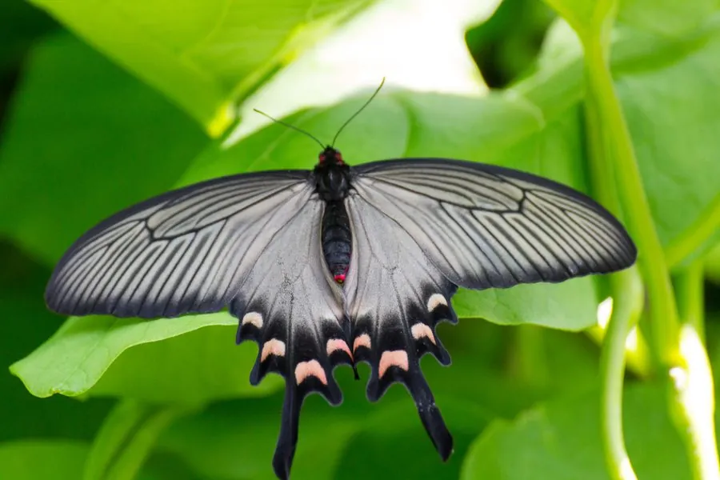

昆虫 · 动物界
麝凤蝶 Byasa alcinous

翅面乌黑、后翅具粉红斑列与长尾突的凤蝶，东亚林缘常见，幼虫取食马兜铃，成虫访花时不停扇翅。
- 分类
- 门节肢动物门纲昆虫纲目鳞翅目科凤蝶科属麝凤蝶属
- 栖息环境
- 低山至平原的林缘、灌丛、溪谷和村落附近
- 地理分布
- 中国大部分地区，以及日本、朝鲜半岛和俄罗斯远东
- 保护级别
- 尚无保护级别；寄主马兜铃因除草与垦殖而减少
物种志
麝凤蝶的翅展约九至十二厘米，翅面乌黑，前翅翅脉两侧略透淡色，后翅中部有一列粉红色至玫瑰色的斑块，斑块之间以黑脉相隔，后翅末端拖出细长的尾突。它的身体黑色，胸侧与腹部有红色绒毛，触角细长。雌蝶体型较大，后翅红斑更发达，有的个体红斑连成一片，雄蝶的斑列则较为稀疏。
它分布于中国大部分地区，以及日本、朝鲜半岛和俄罗斯远东，栖息在低山至平原的林缘、灌丛、溪谷和村落附近，成虫飞行缓慢而优雅，访花时不停扇动翅膀，喜在醉鱼草、马缨丹等花上吸蜜。幼虫以马兜铃属植物为食，卵产在寄主的叶片或嫩枝上，幼虫取食叶片并积累毒素，化蛹于枝条或篱笆上，一年发生两代，以蛹越冬。它是东亚最常见的麝凤蝶之一，尚无保护级别，但寄主植物因除草和垦殖而减少。
形态与习性
- 翅展约九至十二厘米，翅面乌黑
- 后翅中部一列粉红至玫瑰色斑块，具长尾突
- 体色身体黑色，胸侧与腹部有红色绒毛
- 食性幼虫取食马兜铃属植物叶片
- 习性访花时不停扇翅，飞行缓慢优雅
- 发生世代一年两代，以蛹越冬
趣味知识
- 它停在花上吸蜜时翅膀几乎不停，像一只被风吹转的小风车。
- 雄蝶后翅的红斑稀稀落落，雌蝶的却连成一片，性别一眼可辨。
- 幼虫吃马兜铃攒下毒素，成虫因此带着一股鸟类不敢碰的气味。